Christopher Gerald Jordan 1891 - 1965
[ Home ] | [ Calendar ] | [ Surnames Index ] | [ Errors ] | [ Family History ]The child of James Jordan (a horse keeper) and Julia Culmer, Christopher Jordan, the second cousin twice-removed on the mother's side of Nigel Horne, was born in Faversham, Kent, England on 18 Feb 18911, was baptised there on 20 Mar 1891 and married Elizabeth Moore (with whom he had 1 child, Chris Edouard) in New Zealand in 19163.
During his life, he was living at 2 Mill Place in Faversham on 5 Apr 18915 - less than a mile from his sister Alice Ann Harriet who was living at 2 Mill Place in Faversham and on 31 Mar 19016; and at 20 Hutchinson Avenue, New Lynn, Auckland, New Zealand in 19284. In 1937 he travelled from Honolulu, Hawaii, USA to Vancouver, British Columbia, Canada, departing on 14 Jul, arriving later that same year. On 17 Jul 1917 he was serving in the military (service Number: WW1 76452).
He died on 23 Nov 1965 in Auckland, Auckland, New Zealand2 and was buried there at Waikumete Cemetery after 23 Nov 1965.
Parents
- James was born on 16 Jan 1854
- Julia was born on 17 Apr 1852
Children
- Chris Edouard was born on 7 Dec 1916
Citations
- England & Wales births 1837-2006 - Findmypast
- New Zealand Death Index - Findmypast
- New Zealand, Marriage Index, 1840-1934
- New Zealand, Electoral Rolls, 1853-1981
- 1891 England, Wales & Scotland Census - Findmypast (was age 0 and the son of the head of the household)
- 1901 England, Wales & Scotland Census - Findmypast (was age 10 and the son of the head of the household)
Media
WWI 1

WWI 2

WWI 3

WWI 4
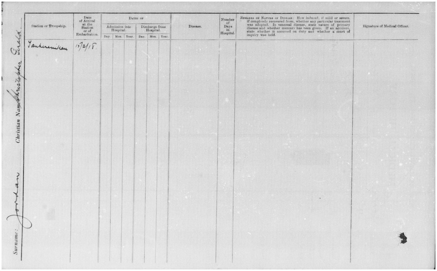
WWI 5
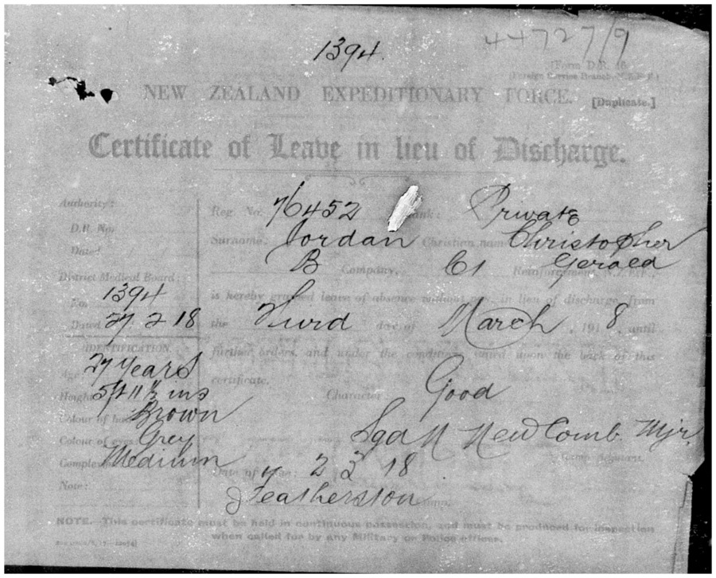
WWI 6

WWI 7
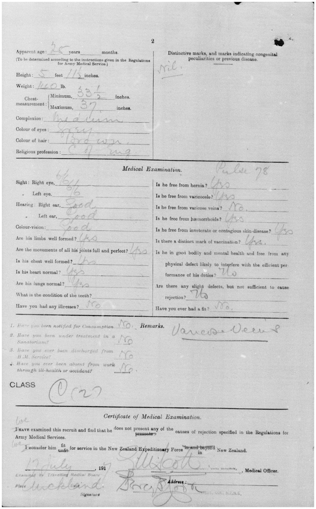
WWI 8
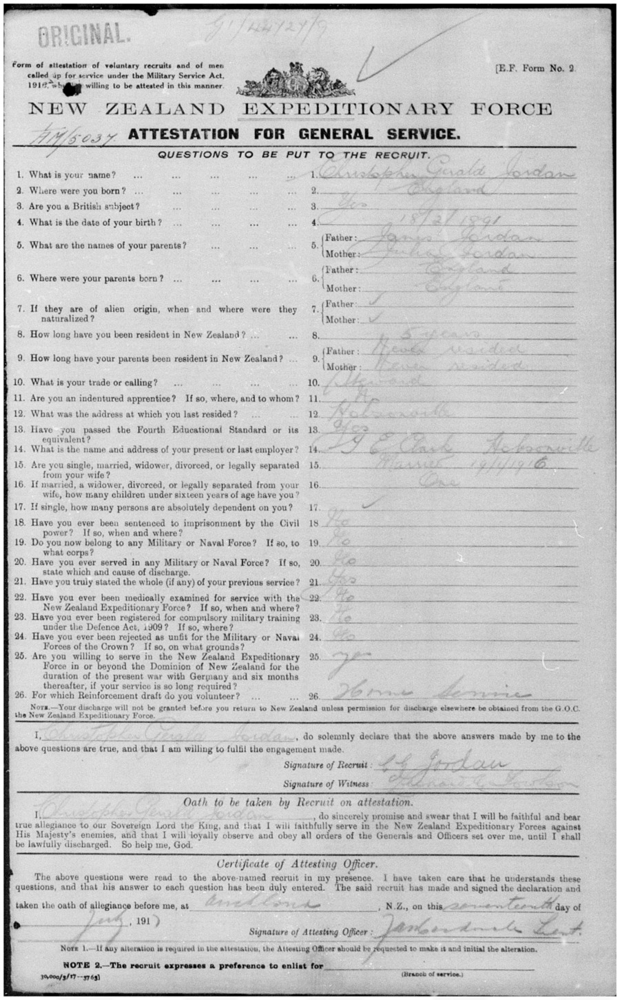
WWI 9
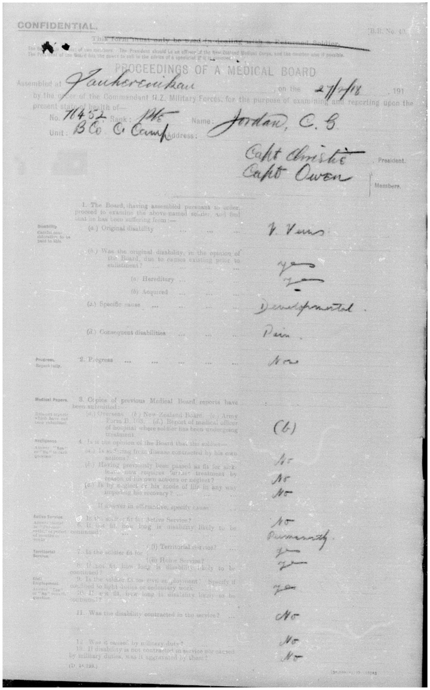
WWI 10

WWI 11
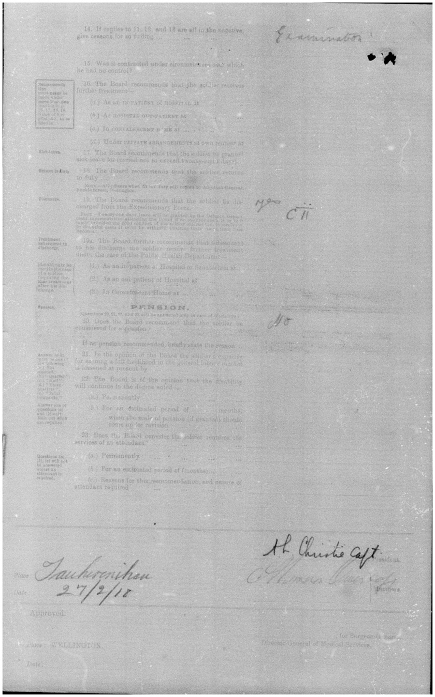
WWI 12
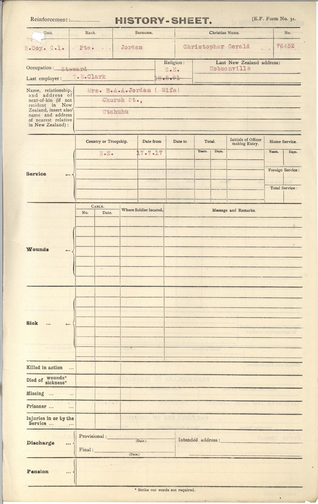
WWI 13
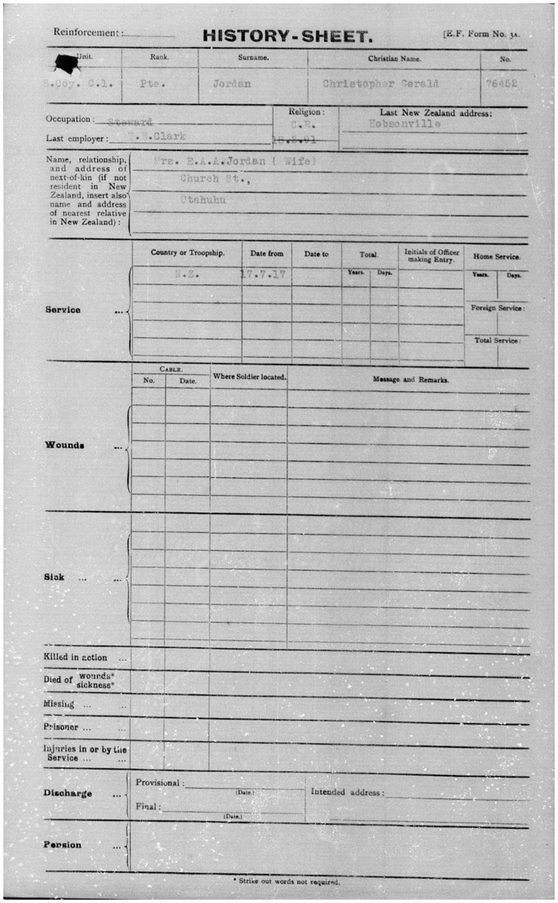
WWI 14
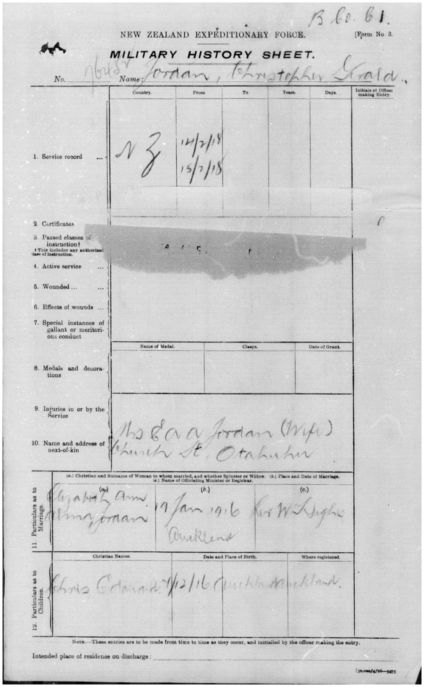
WWI 15
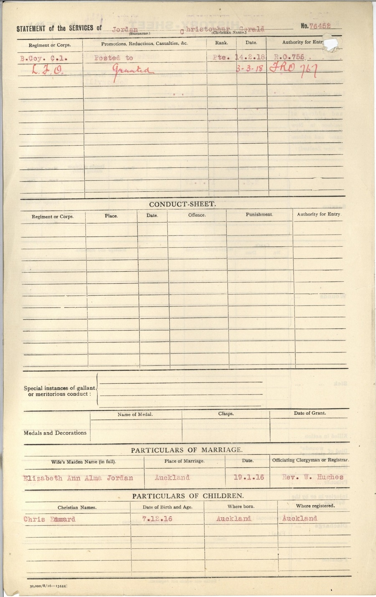
WWI 16
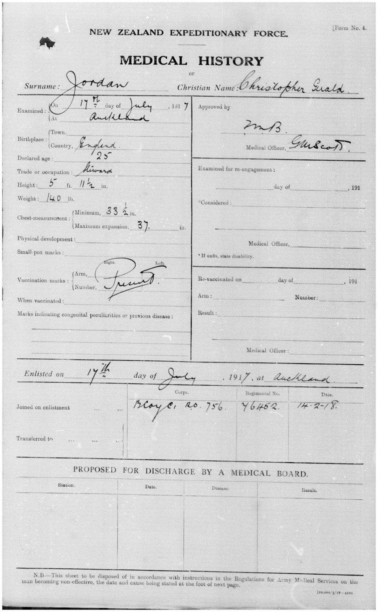
Christopher Jordon - Military Record

Christopher Jordon - Military Record 2
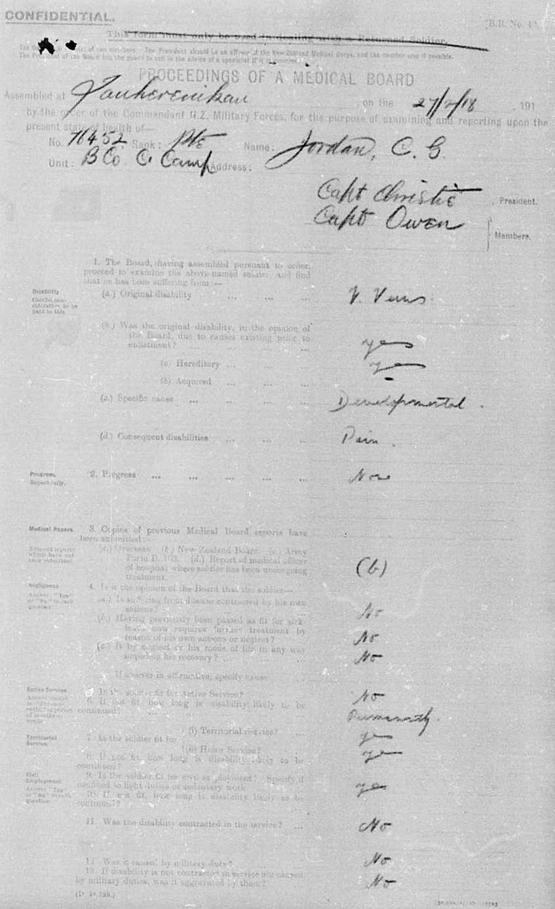
Christopher Jordon - Military Record 3
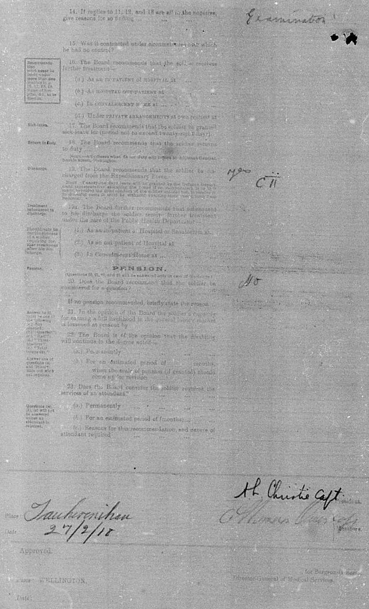
Christopher Jordon - Military Record 4
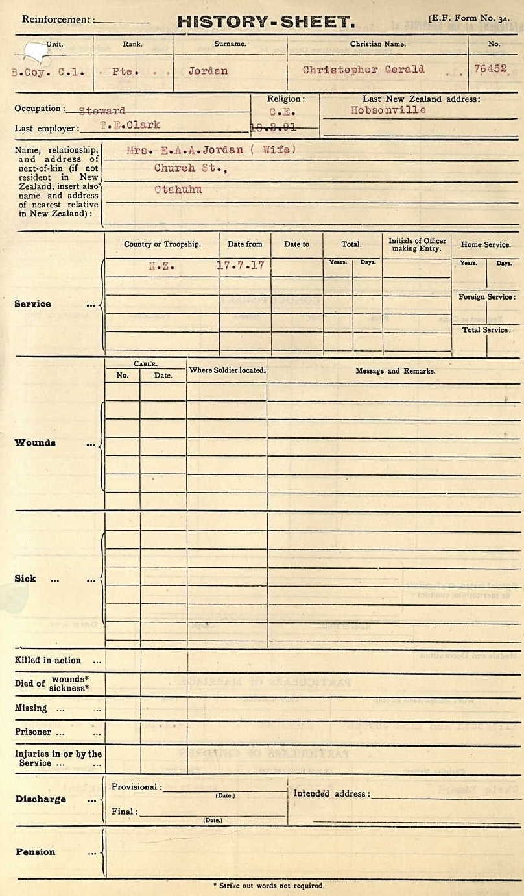
Christopher Jordon - Military Record 8

Christopher Jordon - Military Record 6
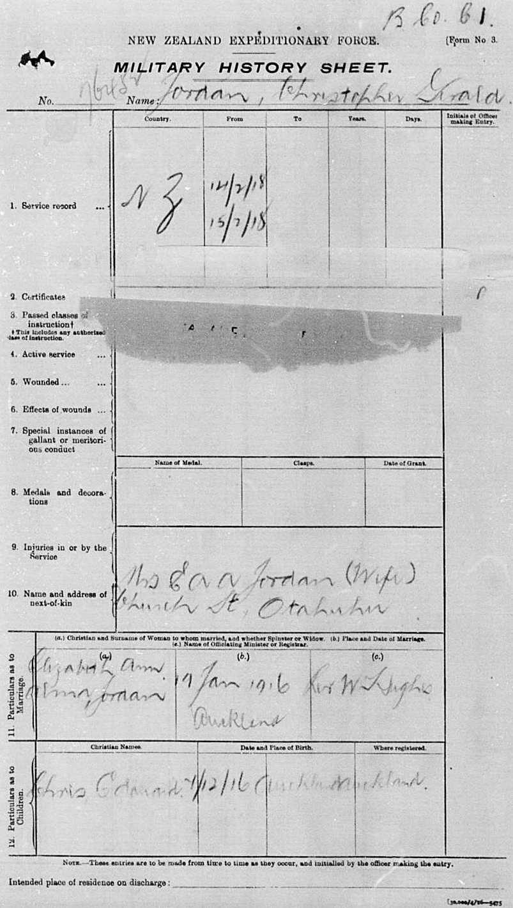
Christopher Jordon - Military Record 7
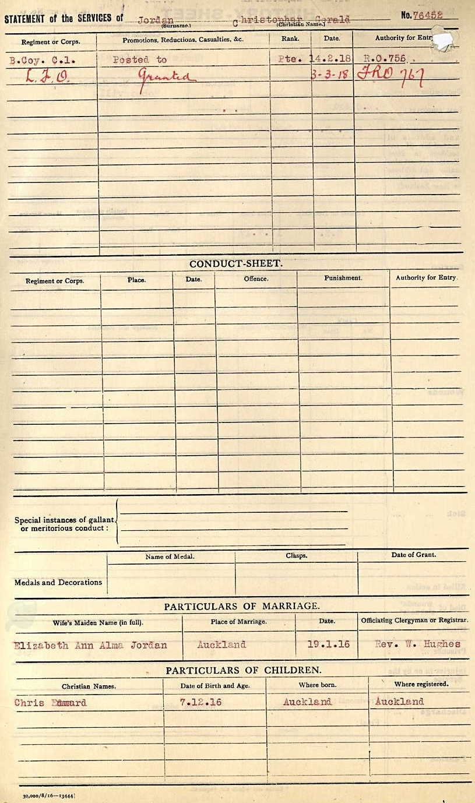
Christopher Jordon - Military Record 8
England & Wales births 1837-2006 - BMD/B/1891/2/AZ/000342/257
1891 England, Wales & Scotland Census - GBC/1891/0005793053
1901 England, Wales & Scotland Census - GBC/1901/0006632161
New Zealand death index - ANZ/NZBMD/D/0401329
New South Wales Passenger Lists Transcription - ANZ-NSW-PASS-UNASST-05837079
New South Wales Passenger Lists Transcription - ANZ-NSW-PASS-UNASST-07982159
England, Births & Baptisms 1538-1975 Transcription - R_885854844
Britain, merchant seamen, 1918-1941 Transcription - TNA-BT349-2130547769-1
Britain, merchant seamen, 1918-1941 Transcription - TNA-BT348-2130207255-1
Family Tree

Map
Generated by ged2site. Last updated on Jul 3, 2024
Known Issues
Burial place (Auckland, Auckland, New Zealand) has no citations
Adding date of burial as 'aft 23 Nov 1965'
Location for "military service" on 17 Jul 1917 is empty